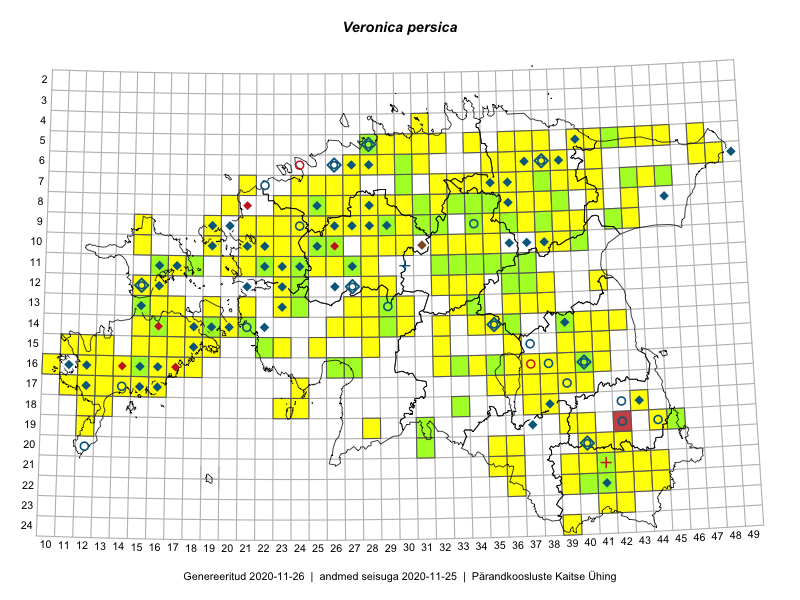

Veronica persica
Uuendatud: 2016-12-08
Kaardile koondatud taksonid: Veronica persica Poir.

Kaart põhineb 269 kirjel, neist vaatlusi 257 ja eksemplare 12. Taksonit on leitud 194 ruudust.
| Ruut | Vaatleja(d) | Vaatlusaeg | Kirje tüüp | Viide andmebaasikirjele |
|---|---|---|---|---|
| ? | Malle Leht | 2015-05-16 | ruut/ala | vaata PlutoFis |
| 17-39 | Meeli Mesipuu, Kadri Tali | 2015-04-30 | ruut/ala | vaata PlutoFis |
| 12-36 | Peedu Saar, Timo Luhamäe | 2015-05-11 | ruut/ala | vaata PlutoFis |
| 07-35 | Peedu Saar, Timo Luhamäe | 2015-05-12 | ruut/ala | vaata PlutoFis |
| 06-39 | Peedu Saar, Timo Luhamäe | 2015-05-13 | ruut/ala | vaata PlutoFis |
| 07-39 | Peedu Saar, Timo Luhamäe | 2015-05-13 | ruut/ala | vaata PlutoFis |
| 09-43 | Peedu Saar | 2015-05-14 | ruut/ala | vaata PlutoFis |
| 05-45 | Tiit Hallikma, Toomas Kukk | 2015-07-21 | ruut/ala | vaata PlutoFis |
| 12-33 | Toomas Kukk, Indrek Tammekänd | 2015-05-10 | ruut/ala | vaata PlutoFis |
| 07-37 | Toomas Kukk, Raivo Kalle | 2015-05-13 | ruut/ala | vaata PlutoFis |
| 14-41 | Peedu Saar, Ott Luuk | 2015-06-21 | ruut/ala | vaata PlutoFis |
| 14-42 | Peedu Saar, Ott Luuk | 2015-06-21 | ruut/ala | vaata PlutoFis |
| 09-38 | Toomas Kukk, Raivo Kalle | 2015-05-11 | ruut/ala | vaata PlutoFis |
| 10-34 | Peedu Saar, Liina Oja | 2015-06-08 | ruut/ala | vaata PlutoFis |
| 06-41 | Toomas Kukk, Tiit Hallikma | 2015-07-24 | ruut/ala | vaata PlutoFis |
| ? | Malle Leht | 2015-07-08 | ruut/ala | vaata PlutoFis |
| 05-47 | Tiit Hallikma, Toomas Kukk | 2015-07-22 | ruut/ala | vaata PlutoFis |
| 07-41 | Tiit Hallikma, Toomas Kukk | 2015-07-23 | ruut/ala | vaata PlutoFis |
| 14-26 | Tiit Hallikma, Indrek Tammekänd, Toomas Kukk | 2015-06-08 | ruut/ala | vaata PlutoFis |
| 07-44 | Tiit Hallikma, Toomas Kukk | 2015-07-20 | ruut/ala | vaata PlutoFis |
| 12-24 | Tiit Hallikma, Toomas Kukk | 2015-08-24 | ruut/ala | vaata PlutoFis |
| 05-30 | Rein Kalamees, Kersti Püssa | 2015-09-27 | ruut/ala | vaata PlutoFis |
| 16-16 | Ott Luuk, Elle Roosaluste, Jaak-Albert Metsoja | 2015-06-15 | ruut/ala | vaata PlutoFis |
| 17-40 | Thea Kull, Peedu Saar | 2015-06-19 | ruut/ala | vaata PlutoFis |
| 14-16 | Toomas Kukk, Thea Kull, Ott Luuk, Peedu Saar | 2014-06-27 | ruut/ala | vaata PlutoFis |
| 11-34 | Ott Luuk, Hannes Pehlak | 2015-06-08 | ruut/ala | vaata PlutoFis |
| 17-13 | Triin Reitalu, Mari Reitalu | 2015-04-19 | ruut/ala | vaata PlutoFis |
| 08-33 | Jana-Maria Habicht, Ester Valdvee | 2015-05-29 | ruut/ala | vaata PlutoFis |
| 08-34 | Jana-Maria Habicht, Ester Valdvee | 2015-05-30 | ruut/ala | vaata PlutoFis |
| 08-35 | Jana-Maria Habicht, Ester Valdvee, Kirke Pilvik | 2015-07-14 | ruut/ala | vaata PlutoFis |
| 09-34 | Jana-Maria Habicht, Ester Valdvee, Kirke Pilvik | 2015-07-25 | ruut/ala | vaata PlutoFis |
| 09-36 | Jana-Maria Habicht, Ester Valdvee | 2015-08-15 | ruut/ala | vaata PlutoFis |
| 15-40 | Thea Kull | 2015-06-15 | ruut/ala | vaata PlutoFis |
| 14-19 | Meeli Mesipuu | 2015-05-09 | ruut/ala | vaata PlutoFis |
| 17-13 | Triin Reitalu, Mari Reitalu | 2015-05-18 | ruut/ala | vaata PlutoFis |
| 10-32 | Ott Luuk | 2015-08-03 | ruut/ala | vaata PlutoFis |
| 13-23 | Kirsi Loide, Marje Loide | 2015-04-20T07:00Z | ruut/ala | vaata PlutoFis |
| 11-37 | Ülle Jõgar, Illi Tarmu, K. Rünk | 2015-07-24 | ruut/ala | vaata PlutoFis |
| 17-24 | Maret Gerz, Leena Gerz | 2015-08-12 | ruut/ala | vaata PlutoFis |
| 12-41 | Meeli Mesipuu, Maret Gerz | 2015-05-14 | ruut/ala | vaata PlutoFis |
| 15-12 | Triin Reitalu | 2015-05-12 | ruut/ala | vaata PlutoFis |
| 12-37 | Ülle Jõgar, Illi Tarmu, K. Rünk | 2015-07-23 | ruut/ala | vaata PlutoFis |
| 15-11 | Mari Reitalu, Triin Reitalu | 2015-04-25 | ruut/ala | vaata PlutoFis |
| 15-25 | Maret Gerz, Leena Gerz | 2015-08-08 | ruut/ala | vaata PlutoFis |
| 17-14 | Mari Reitalu, Sirje Azarov | 2015-05-09 | ruut/ala | vaata PlutoFis |
| 16-12 | Mari Reitalu | 2015-06-10 | ruut/ala | vaata PlutoFis |
| 14-39 | Erkki Otsman, Sergei Smirnov | 2015-07-21 | ruut/ala | vaata PlutoFis |
| 16-13 | Mari Reitalu, Oliver Parrest | 2015-05-22 | ruut/ala | vaata PlutoFis |
| 15-36 | Toivo Sepp, Eerik Leibak | 2015-05-13 | ruut/ala | vaata PlutoFis |
| 08-35 | Toivo Sepp, Eerik Leibak | 2015-05-12 | ruut/ala | vaata PlutoFis |
| 08-36 | Toivo Sepp, Eerik Leibak | 2015-05-12 | ruut/ala | vaata PlutoFis |
| 15-13 | Mari Reitalu, Oliver Parrest | 2015-05-14 | ruut/ala | vaata PlutoFis |
| 14-19 | Meeli Mesipuu | 2015-06-25 | ruut/ala | vaata PlutoFis |
| 16-36 | Meeli Mesipuu, Peedu Saar | 2015-05-05 | ruut/ala | vaata PlutoFis |
| 17-12 | Mari Reitalu, Triin Reitalu | 2015-05-05 | ruut/ala | vaata PlutoFis |
| 12-38 | Ulvi Selgis | 2015-09-04 | punkt | vaata PlutoFis |
| 14-16 | Mari Reitalu, Sirje Azarov | 2015-05-09 | ruut/ala | vaata PlutoFis |
| 16-18 | Mari Reitalu, Sirje Azarov | 2015-05-16 | ruut/ala | vaata PlutoFis |
| 15-19 | Mari Reitalu, Sirje Azarov | 2015-05-16 | ruut/ala | vaata PlutoFis |
| 16-37 | Meeli Mesipuu, Peedu Saar | 2015-05-05 | ruut/ala | vaata PlutoFis |
| 17-14 | Sirje Azarov, Mari Reitalu | 2015-04-27 | ruut/ala | vaata PlutoFis |
| 16-10 | Sirje Azarov, Mari Reitalu | 2015-05-22 | ruut/ala | vaata PlutoFis |
| 17-11 | Mari Reitalu, Triin Reitalu | 2015-05-19 | ruut/ala | vaata PlutoFis |
| 16-40 | Karin Kikas, Elle Rajandu | 2015-04-21 | ruut/ala | vaata PlutoFis |
| 17-11 | Mari Reitalu, Triin Reitalu | 2015-05-10 | ruut/ala | vaata PlutoFis |
| 15-40 | Elle Rajandu | 2015-04-15 | ruut/ala | vaata PlutoFis |
| 22-41 | Karin Kikas, Elle Rajandu | 2015-05-25 | ruut/ala | vaata PlutoFis |
| 08-39 | Maret Gerz, Meeli Mesipuu | 2015-05-12 | ruut/ala | vaata PlutoFis |
| 09-38 | Karin Kikas, Elle Rajandu | 2015-06-01 | ruut/ala | vaata PlutoFis |
| 08-37 | Karin Kikas, Elle Rajandu | 2015-06-14 | ruut/ala | vaata PlutoFis |
| 08-37 | Karin Kikas, Elle Rajandu | 2015-06-14 | punkt | vaata PlutoFis |
| 10-30 | Toivo Sepp | 2015-05-29 | ruut/ala | vaata PlutoFis |
| 05-45 | Meeli Mesipuu | 2015-06-01 | ruut/ala | vaata PlutoFis |
| 05-45 | Meeli Mesipuu | 2015-06-01 | punkt | vaata PlutoFis |
| 18-37 | Helle Mäemets, Mare Leis | 2015-06-22 | ruut/ala | vaata PlutoFis |
| 09-37 | Karin Kikas, Elle Rajandu | 2015-06-01 | ruut/ala | vaata PlutoFis |
| 17-35 | Helle Mäemets, Mare Leis | 2015-06-23 | ruut/ala | vaata PlutoFis |
| 11-16 | Meeli Mesipuu, Timo Luhamäe | 2015-05-28 | ruut/ala | vaata PlutoFis |
| 05-38 | Kersti Püssa, Rein Kalamees | 2015-08-11 | ruut/ala | vaata PlutoFis |
| 16-14 | Karin Kikas, Elle Rajandu | 2015-07-20 | ruut/ala | vaata PlutoFis |
| 16-15 | Karin Kikas, Elle Rajandu | 2015-07-20 | ruut/ala | vaata PlutoFis |
| 17-14 | Karin Kikas, Elle Rajandu | 2015-07-22 | ruut/ala | vaata PlutoFis |
| 16-37 | Helle Mäemets, Mare Leis | 2015-06-22 | ruut/ala | vaata PlutoFis |
| 05-42 | Kaili Orav, Silvia Pihu | 2015-06-18 | ruut/ala | vaata PlutoFis |
| 11-16 | Meeli Mesipuu, Timo Luhamäe | 2015-05-28 | punkt | vaata PlutoFis |
| 15-41 | Hannes Pehlak, Pille Säälik | 2015-06-24 | ruut/ala | vaata PlutoFis |
| 11-25 | Hanna-Eliisa Luts, Tõnu Ploompuu | 2015-07-28 | ruut/ala | vaata PlutoFis |
| 09-42 | Tõnu Ploompuu | 2015-08-26 | ruut/ala | vaata PlutoFis |
| 10-23 | Hanna-Eliisa Luts, Tõnu Ploompuu | 2015-07-16 | ruut/ala | vaata PlutoFis |
| 10-24 | Hanna-Eliisa Luts, Tõnu Ploompuu, Anna-Grete Rebane | 2015-07-19 | ruut/ala | vaata PlutoFis |
| 11-20 | Hanna-Eliisa Luts, Tõnu Ploompuu | 2015-08-13 | ruut/ala | vaata PlutoFis |
| 08-28 | Aat Sarv | 2015-08-03 | ruut/ala | vaata PlutoFis |
| 11-26 | Hanna-Eliisa Luts, Tõnu Ploompuu | 2015-07-28 | ruut/ala | vaata PlutoFis |
| 11-22 | Tõnu Ploompuu | 2015-08-21 | ruut/ala | vaata PlutoFis |
| 06-27 | Tõnu Ploompuu | 2015-08-11 | ruut/ala | vaata PlutoFis |
| 11-23 | Hanna-Eliisa Luts, Marian Hiie, Tõnu Ploompuu | 2015-08-04 | ruut/ala | vaata PlutoFis |
| 11-23 | Hanna-Eliisa Luts, Anna-Grete Rebane, Tõnu Ploompuu | 2015-07-20 | ruut/ala | vaata PlutoFis |
| 09-25 | Meelis Muuga, Tõnu Ploompuu | 2015-08-17 | ruut/ala | vaata PlutoFis |
| 08-25 | Meelis Muuga, Tõnu Ploompuu | 2015-08-17 | ruut/ala | vaata PlutoFis |
| 09-24 | Tõnu Ploompuu, Sirje Lagle | 2015-08-18 | ruut/ala | vaata PlutoFis |
| 06-28 | Tõnu Ploompuu | 2015-06-06 | ruut/ala | vaata PlutoFis |
| 08-24 | Sirje Lagle, Tõnu Ploompuu | 2015-08-18 | ruut/ala | vaata PlutoFis |
| 09-21 | Sirje Lagle, Tõnu Ploompuu | 2015-05-16 | ruut/ala | vaata PlutoFis |
| 09-22 | Sirje Lagle, Tõnu Ploompuu | 2015-05-15 | ruut/ala | vaata PlutoFis |
| 09-22 | Tõnu Ploompuu | 2015-07-14 | ruut/ala | vaata PlutoFis |
| 09-23 | Hanna-Eliisa Luts, Tõnu Ploompuu | 2015-07-16 | ruut/ala | vaata PlutoFis |
| 10-21 | Tõnu Ploompuu | 2015-05-02 | ruut/ala | vaata PlutoFis |
| 10-21 | Tõnu Ploompuu | 2015-08-21 | ruut/ala | vaata PlutoFis |
| 10-22 | Tõnu Ploompuu | 2015-05-20 | ruut/ala | vaata PlutoFis |
| 10-23 | Sirje Lagle, Tõnu Ploompuu | 2015-05-15 | ruut/ala | vaata PlutoFis |
| 21-41 | Vivika Väli, Ülo Väli | 2015-05-09 | ruut/ala | vaata PlutoFis |
| 11-22 | Tõnu Ploompuu | 2015-06-03 | ruut/ala | vaata PlutoFis |
| 11-27 | Andrus Jair, Tõnu Ploompuu | 2015-05-17 | ruut/ala | vaata PlutoFis |
| 21-44 | Toomas Kukk, Tiit Hallikma, Johannes Kõdar | 2016-06-14 | ruut/ala | vaata PlutoFis |
| 22-41 | Toomas Kukk, Tiit Hallikma | 2016-06-16 | ruut/ala | vaata PlutoFis |
| 21-39 | Rein Kalamees, Eerik Leibak | 2016-06-17 | ruut/ala | vaata PlutoFis |
| 20-40 | Peedu Saar, Tarmo Niitla | 2016-06-17 | ruut/ala | vaata PlutoFis |
| 21-41 | Vivika Väli, Ülo Väli | 2015-07-15 | ruut/ala | vaata PlutoFis |
| 20-42 | Vivika Väli, Ülo Väli | 2015-07-27 | ruut/ala | vaata PlutoFis |
| 24-39 | Maret Gerz, Liina Oja | 2016-06-14 | ruut/ala | vaata PlutoFis |
| 18-43 | Vivika Väli, Ülo Väli | 2015-07-14 | ruut/ala | vaata PlutoFis |
| 21-42 | Vivika Väli, Ülo Väli | 2015-07-26 | ruut/ala | vaata PlutoFis |
| 20-41 | Vivika Väli, Ülo Väli | 2015-07-27 | ruut/ala | vaata PlutoFis |
| 07-24 | Thea Kull, Helle Mäemets | 2016-07-07 | ruut/ala | vaata PlutoFis |
| 09-29 | Toomas Kukk, Sander Laherand | 2016-07-06 | ruut/ala | vaata PlutoFis |
| 14-28 | Thea Kull, Tiit Hallikma | 2016-07-08 | ruut/ala | vaata PlutoFis |
| 13-28 | Thea Kull, Tiit Hallikma | 2016-07-08 | ruut/ala | vaata PlutoFis |
| 17-36 | Rein Kalamees, Kersti Püssa | 2016-07-20 | ruut/ala | vaata PlutoFis |
| 12-37 | Eeva-Maria Jeletsky, Tarmo Niitla | 2016-07-22 | ruut/ala | vaata PlutoFis |
| 20-36 | Tarmo Niitla, Peedu Saar | 2016-06-14 | ruut/ala | vaata PlutoFis |
| 19-44 | Tarmo Niitla, Peedu Saar | 2016-06-15 | ruut/ala | vaata PlutoFis |
| 20-42 | Tarmo Niitla, Peedu Saar | 2016-06-16 | ruut/ala | vaata PlutoFis |
| 21-40 | Tarmo Niitla, Peedu Saar | 2016-06-17 | ruut/ala | vaata PlutoFis |
| 07-40 | Toomas Kukk, Tiit Hallikma | 2016-07-29 | ruut/ala | vaata PlutoFis |
| 20-35 | Thea Kull, Eerik Leibak | 2016-07-18 | ruut/ala | vaata PlutoFis |
| 14-32 | Toomas Kukk, Liina Oja | 2016-07-21 | ruut/ala | vaata PlutoFis |
| 15-32 | Toomas Kukk, Liina Oja | 2016-07-21 | ruut/ala | vaata PlutoFis |
| 12-36 | Toomas Kukk, Raivo Kalle | 2016-07-22 | ruut/ala | vaata PlutoFis |
| 10-33 | Mari Metsoja, Eerik Leibak | 2016-07-21 | ruut/ala | vaata PlutoFis |
| 12-33 | Tõnu Ploompuu, Marko Veinbergs, Eerik Leibak | 2016-07-22 | ruut/ala | vaata PlutoFis |
| 11-33 | Tõnu Ploompuu, Marko Veinbergs, Eerik Leibak | 2016-07-22 | ruut/ala | vaata PlutoFis |
| 13-36 | Toomas Kukk, Raivo Kalle | 2016-07-22 | ruut/ala | vaata PlutoFis |
| 05-36 | Tõnu Ploompuu, Eerik Leibak | 2016-07-27 | ruut/ala | vaata PlutoFis |
| 05-37 | Tõnu Ploompuu, Eerik Leibak | 2016-07-27 | ruut/ala | vaata PlutoFis |
| 05-30 | Sander Laherand, Eerik Leibak | 2016-07-29 | ruut/ala | vaata PlutoFis |
| 08-35 | Sander Laherand, Toomas Kukk, Nele Jõessar | 2016-07-27 | ruut/ala | vaata PlutoFis |
| 10-35 | Toomas Kukk, Tiit Hallikma | 2016-07-25 | ruut/ala | vaata PlutoFis |
| 09-35 | Toomas Kukk, Tiit Hallikma | 2016-07-25 | ruut/ala | vaata PlutoFis |
| 21-43 | Thea Kull, Peedu Saar | 2016-08-05 | ruut/ala | vaata PlutoFis |
| 22-42 | Thea Kull, Peedu Saar | 2016-08-04 | ruut/ala | vaata PlutoFis |
| 10-38 | Ott Luuk, Eerik Leibak | 2016-08-08 | ruut/ala | vaata PlutoFis |
| 09-38 | Ott Luuk, Eerik Leibak | 2016-08-08 | ruut/ala | vaata PlutoFis |
| 09-40 | Ott Luuk, Eerik Leibak | 2016-08-09 | ruut/ala | vaata PlutoFis |
| 08-36 | Thea Kull, Timo Luhamäe | 2016-07-27 | ruut/ala | vaata PlutoFis |
| 07-36 | Thea Kull, Timo Luhamäe | 2016-07-27 | ruut/ala | vaata PlutoFis |
| 18-33 | Thea Kull, Indrek Tammekänd | 2016-07-19 | ruut/ala | vaata PlutoFis |
| 17-14 | Toomas Kukk, Meeli Mesipuu, Johannes Kõdar | 2016-08-11 | ruut/ala | vaata PlutoFis |
| 15-17 | Peedu Saar, Toomas Kukk | 2016-08-13 | ruut/ala | vaata PlutoFis |
| 12-16 | Sander Laherand, Thea Kull, Nele Jõessar | 2016-08-11 | ruut/ala | vaata PlutoFis |
| 14-15 | Peedu Saar, Maret Gerz | 2016-08-11 | ruut/ala | vaata PlutoFis |
| 08-29 | Sander Laherand, Rein Kalamees | 2016-07-08 | ruut/ala | vaata PlutoFis |
| 16-38 | Rein Kalamees, Kersti Püssa | 2016-07-19 | ruut/ala | vaata PlutoFis |
| 22-43 | Peedu Saar, Thea Kull | 2016-08-04 | ruut/ala | vaata PlutoFis |
| 14-35 | Liina Oja, Elle Rajandu, Susanna Vain | 2016-07-22 | ruut/ala | vaata PlutoFis |
| 13-15 | Maret Gerz, Peedu Saar | 2016-08-11 | ruut/ala | vaata PlutoFis |
| 22-44 | Peedu Saar, Karin Kikas | 2016-08-19 | ruut/ala | vaata PlutoFis |
| 15-16 | Meeli Mesipuu, Maret Gerz | 2016-08-13 | ruut/ala | vaata PlutoFis |
| 08-39 | Meeli Mesipuu, Liina Oja | 2016-07-29 | ruut/ala | vaata PlutoFis |
| 06-36 | Karin Kikas, Elle Rajandu | 2016-06-28 | ruut/ala | vaata PlutoFis |
| 14-40 | Karin Kikas, Elle Rajandu | 2016-07-01 | ruut/ala | vaata PlutoFis |
| 14-39 | Karin Kikas, Elle Rajandu | 2016-07-01 | ruut/ala | vaata PlutoFis |
| 20-36 | Thea Kull, Ott Luuk | 2016-08-23 | ruut/ala | vaata PlutoFis |
| 05-29 | Toomas Kukk, Sander Laherand | 2016-08-29 | ruut/ala | vaata PlutoFis |
| 06-30 | Toomas Kukk, Sander Laherand | 2016-08-30 | ruut/ala | vaata PlutoFis |
| 11-16 | Toomas Kukk, Thea Kull | 2016-08-08 | ruut/ala | vaata PlutoFis |
| 12-15 | Toomas Kukk, Meeli Mesipuu | 2016-08-10 | ruut/ala | vaata PlutoFis |
| 17-16 | Toomas Kukk, Meeli Mesipuu | 2016-08-12 | ruut/ala | vaata PlutoFis |
| 04-31 | Sander Laherand, Toomas Kukk | 2016-08-31 | ruut/ala | vaata PlutoFis |
| 05-32 | Rein Kalamees | 2016-08-31 | ruut/ala | vaata PlutoFis |
| 18-37 | Rein Kalamees, Kersti Püssa | 2016-07-21 | ruut/ala | vaata PlutoFis |
| 05-38 | Thea Kull, Toomas Kukk | 2016-09-05 | ruut/ala | vaata PlutoFis |
| 11-22 | Sirje Azarov, Oliver Parrest | 2016-07-07 | ruut/ala | vaata PlutoFis |
| 07-30 | Toomas Kukk, Peedu Saar | 2016-09-09 | ruut/ala | vaata PlutoFis |
| 07-35 | Toomas Kukk, Sander Laherand, Nele Jõessar | 2016-07-27 | ruut/ala | vaata PlutoFis |
| 05-31 | Sander Laherand, Toomas Kukk | 2016-08-30 | ruut/ala | vaata PlutoFis |
| 05-43 | Peedu Saar, Toomas Kukk | 2016-09-13 | ruut/ala | vaata PlutoFis |
| 09-37 | Mari Reitalu, Triin Reitalu | 2016-07-11 | ruut/ala | vaata PlutoFis |
| 06-29 | Sander Laherand, Toomas Kukk | 2016-08-29 | ruut/ala | vaata PlutoFis |
| 07-33 | Peedu Saar, Toomas Kukk | 2016-09-13 | ruut/ala | vaata PlutoFis |
| 15-18 | Mari Reitalu, Hannes Pehlak | 2016-08-26 | ruut/ala | vaata PlutoFis |
| 18-13 | Mari Reitalu, Sirje Azarov | 2016-07-31 | ruut/ala | vaata PlutoFis |
| 17-38 | Kersti Püssa, Rein Kalamees | 2016-07-25 | ruut/ala | vaata PlutoFis |
| 16-41 | Kersti Püssa, Rein Kalamees | 2016-07-27 | ruut/ala | vaata PlutoFis |
| 10-24 | Helle Mäemets, Tiina Elvisto | 2016-07-06 | ruut/ala | vaata PlutoFis |
| 18-24 | Peedu Saar, Ott Luuk | 2016-09-21 | ruut/ala | vaata PlutoFis |
| 05-44 | Peedu Saar, Toomas Kukk | 2016-09-13 | ruut/ala | vaata PlutoFis |
| 08-25 | Helle Mäemets, Tiina Elvisto | 2016-07-05 | ruut/ala | vaata PlutoFis |
| 15-15 | Meeli Mesipuu | 2016-09-23 | ruut/ala | vaata PlutoFis |
| 16-16 | Meeli Mesipuu | 2016-09-24 | ruut/ala | vaata PlutoFis |
| 06-31 | Peedu Saar, Toomas Kukk | 2016-09-08 | ruut/ala | vaata PlutoFis |
| 08-30 | Peedu Saar, Toomas Kukk | 2016-09-09 | ruut/ala | vaata PlutoFis |
| 07-30 | Peedu Saar, Toomas Kukk | 2016-09-09 | punkt | vaata PlutoFis |
| 09-31 | Peedu Saar, Ott Luuk | 2016-09-07 | ruut/ala | vaata PlutoFis |
| 14-19 | Meeli Mesipuu | 2016-09-26 | punkt | vaata PlutoFis |
| 17-15 | Mari Reitalu, Sirje Azarov | 2016-05-19 | ruut/ala | vaata PlutoFis |
| 16-39 | Kersti Püssa, Rein Kalamees | 2016-07-13 | ruut/ala | vaata PlutoFis |
| 07-32 | Peedu Saar, Ott Luuk | 2016-09-28 | ruut/ala | vaata PlutoFis |
| 13-17 | Peedu Saar, Ott Luuk | 2016-08-29 | ruut/ala | vaata PlutoFis |
| 11-24 | Helle Mäemets, Tiina Elvisto | 2016-07-06 | ruut/ala | vaata PlutoFis |
| 21-35 | Ott Luuk, Peedu Saar | 2016-09-22 | ruut/ala | vaata PlutoFis |
| 13-16 | Peedu Saar, Ott Luuk | 2016-08-31 | ruut/ala | vaata PlutoFis |
| 16-17 | Peedu Saar, Ott Luuk | 2016-09-01 | ruut/ala | vaata PlutoFis |
| 18-23 | Ott Luuk, Peedu Saar | 2016-09-21 | ruut/ala | vaata PlutoFis |
| 08-20 | Tiit Hallikma, Tõnu Ploompuu | 2016-07-07 | ruut/ala | vaata PlutoFis |
| 13-30 | Tõnu Ploompuu, Hannes Pehlak, Marko Veinbergs | 2016-07-21 | ruut/ala | vaata PlutoFis |
| 16-14 | Meeli Mesipuu | 2016-09-26 | ruut/ala | vaata PlutoFis |
| 16-13 | Meeli Mesipuu | 2016-09-26 | punkt | vaata PlutoFis |
| 16-40 | Meeli Mesipuu | 2016-07-30 | punkt | vaata PlutoFis |
| 09-36 | Peedu Saar, Liina Oja, Susanna Vain | 2016-07-25 | ruut/ala | vaata PlutoFis |
| 06-36 | Peedu Saar, Liina Oja, Susanna Vain | 2016-07-27 | ruut/ala | vaata PlutoFis |
| 05-40 | Peedu Saar, Sander Laherand | 2016-07-28 | ruut/ala | vaata PlutoFis |
| 08-41 | Peedu Saar, Timo Luhamäe | 2016-07-29 | ruut/ala | vaata PlutoFis |
| 08-32 | Ott Luuk, Peedu Saar | 2016-09-28 | ruut/ala | vaata PlutoFis |
| 09-30 | Ott Luuk, Peedu Saar | 2016-09-06 | ruut/ala | vaata PlutoFis |
| 11-34 | Peedu Saar, Timo Luhamäe | 2016-07-21 | ruut/ala | vaata PlutoFis |
| 17-16 | Ott Luuk, Peedu Saar | 2016-08-30 | ruut/ala | vaata PlutoFis |
| 16-13 | Toomas Kukk, Meeli Mesipuu | 2016-10-05 | ruut/ala | vaata PlutoFis |
| 15-11 | Meeli Mesipuu, Toomas Kukk, Mari Reitalu | 2016-10-07 | ruut/ala | vaata PlutoFis |
| 15-12 | Toomas Kukk, Meeli Mesipuu | 2016-10-08 | ruut/ala | vaata PlutoFis |
| 18-12 | Toomas Kukk, Meeli Mesipuu, Mari Reitalu | 2016-10-07 | ruut/ala | vaata PlutoFis |
| 15-11 | Toomas Kukk, Meeli Mesipuu, Mari Reitalu | 2016-10-07 | punkt | vaata PlutoFis |
| 19-12 | Peedu Saar, Ott Luuk | 2016-10-07 | punkt | vaata PlutoFis |
| 20-31 | Ott Luuk, Peedu Saar | 2016-10-06 | ruut/ala | vaata PlutoFis |
| 05-41 | Tiit Hallikma, Tõnu Ploompuu | 2016-07-26 | ruut/ala | vaata PlutoFis |
| 19-31 | Meeli Mesipuu, Mari Metsoja | 2016-07-19 | ruut/ala | vaata PlutoFis |
| 17-13 | Ott Luuk, Peedu Saar | 2016-10-08 | ruut/ala | vaata PlutoFis |
| 19-12 | Ott Luuk, Peedu Saar | 2016-10-07 | ruut/ala | vaata PlutoFis |
| 14-17 | Ott Luuk, Peedu Saar | 2016-08-29 | ruut/ala | vaata PlutoFis |
| 14-16 | Ott Luuk, Peedu Saar | 2016-08-31 | ruut/ala | vaata PlutoFis |
| 10-28 | Peedu Saar, Timo Luhamäe, Johannes Kõdar | 2016-07-06 | ruut/ala | vaata PlutoFis |
| 13-27 | Peedu Saar, Timo Luhamäe | 2016-07-08 | ruut/ala | vaata PlutoFis |
| 18-38 | Ott Luuk, Thea Kull | 2016-08-23 | ruut/ala | vaata PlutoFis |
| 16-16 | Meeli Mesipuu | 2016-09-25 | punkt | vaata PlutoFis |
| 07-39 | Meeli Mesipuu, Liina Oja | 2016-07-29 | ruut/ala | vaata PlutoFis |
| 09-19 | Meeli Mesipuu, Ott Luuk | 2016-09-16 | ruut/ala | vaata PlutoFis |
| 19-28 | Toivo Sepp, Liina Oja | 2016-07-19 | ruut/ala | vaata PlutoFis |
| 13-34 | Meeli Mesipuu, Timo Luhamäe | 2016-07-22 | ruut/ala | vaata PlutoFis |
| 17-15 | Meeli Mesipuu, Toomas Kukk, Johannes Kõdar | 2016-08-11 | ruut/ala | vaata PlutoFis |
| 07-37 | Meeli Mesipuu, Tiit Hallikma | 2016-07-27 | ruut/ala | vaata PlutoFis |
| 06-37 | Meeli Mesipuu, Tiit Hallikma | 2016-07-27 | ruut/ala | vaata PlutoFis |
| 11-36 | Meeli Mesipuu, Timo Luhamäe | 2016-07-25 | ruut/ala | vaata PlutoFis |
| 16-32 | Elle Rajandu, Indrek Tammekänd | 2016-07-20 | ruut/ala | vaata PlutoFis |
| 15-28 | Elle Rajandu, Tiit Hallikma | 2016-07-21 | ruut/ala | vaata PlutoFis |
| 18-43 | Meeli Mesipuu | 2016-09-02 | punkt | vaata PlutoFis |
| 06-38 | Hannes Pehlak, Thea Kull | 2016-07-25 | ruut/ala | vaata PlutoFis |
| 05-38 | Hannes Pehlak, Toomas Kukk, Susanna Vain | 2016-07-28 | ruut/ala | vaata PlutoFis |
| 15-39 | Elle Rajandu, Karin Kikas | 2015-04-30 | ruut/ala | vaata PlutoFis |
| 14-36 | Peedu Saar | 2015-08-04 | eksemplar | vaata PlutoFis |
| 12-36 | Peedu Saar, Timo Luhamäe | 2015-05-11 | eksemplar | vaata PlutoFis |
| 08-34 | Jana-Maria Habicht | 2015-05-10 | eksemplar | vaata PlutoFis |
| 08-33 | Jana-Maria Habicht | 2015-05-29 | eksemplar | vaata PlutoFis |
| 08-33 | Jana-Maria Habicht | 2015-05-29 | eksemplar | vaata PlutoFis |
| 08-33 | Jana-Maria Habicht | 2015-05-29 | eksemplar | vaata PlutoFis |
| 08-34 | Jana-Maria Habicht | 2015-05-30 | eksemplar | vaata PlutoFis |
| 09-34 | Jana-Maria Habicht | 2015-07-26 | eksemplar | vaata PlutoFis |
| 08-35 | Jana-Maria Habicht | 2015-07-14 | eksemplar | vaata PlutoFis |
| 09-36 | Jana-Maria Habicht | 2015-08-15 | eksemplar | vaata PlutoFis |
| 08-31 | Peedu Saar, Toivo Sepp | 2016-07-18 | eksemplar | vaata PlutoFis |
| 13-24 | Peedu Saar, Timo Luhamäe, Johannes Kõdar | 2016-07-05 | eksemplar | vaata PlutoFis |